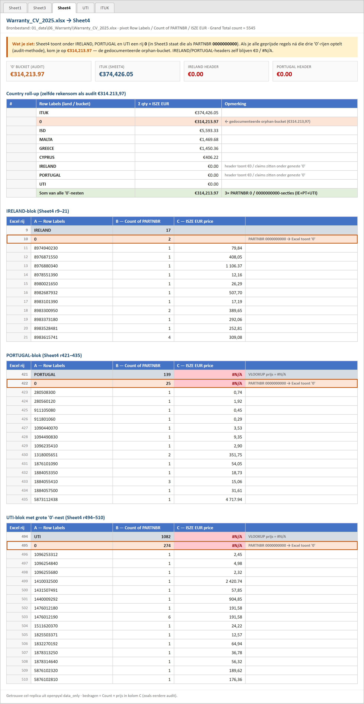
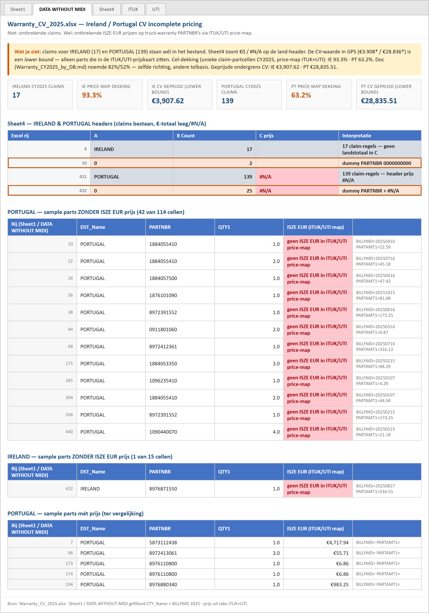

Zelf gecontroleerd op de echte Excel-bestanden · 2026-07-27 · Mode B intern
C:\Users\jerom\Desktop\claude\ISZE\01_data\06_Warranty\UMI warranty data 202301 - 202605.xlsx
Tab ClaimAssess (1) · filter Written Date_YMD in kalenderjaar 2025 · som kolom Approved total part cost.
| Kolom | Voorbeeld (dec 2025) |
|---|---|
| Written Date_YMD | 20251202 |
| Approved total part cost | 79,14 / 6.375,04 … |
| VIN | MPATFR87JPT003931 … |
C:\Users\jerom\Desktop\claude\ISZE\01_data\06_Warranty\Warranty_LCV_2025.xlsx
Tab ExportClaimAssessment202501-202 · kolom DistributorName
| DistributorName | Regels |
|---|---|
| ISUZU (UK) | 6.560 |
| MIDI EUROPE - FRANCE | 1.099 |
| Isuzu Sverige AB | 1.056 |
| RSA | 1.025 |
| IMOTORS LDA (Portugal LCV) | 527 |
| Isuzu Ireland 2020 Unlimited Company | 172 |
| Israel / UMI | 0 |
C:\Users\jerom\Desktop\claude\ISZE\01_data\06_Warranty\Warranty_CV_2025.xlsx → tab Sheet4
Periode: CY2025 truck warranty (BILLYMD 2025 in bronfile).
| Land / bucket | Warranty parts € | Opmerking |
|---|---|---|
| ITUK | 374.426,05 | OK — eigen tab |
| “0” (geen landcode) | 314.213,97 | Weet niet welke DB — moet uit pivot/export komen |
| ISD | 5.593,33 | |
| IRELAND (pivot totaal) | 0,00 | 17 truck-regels; waarde zit deels onder sub-bucket “0” (2 regels) |
| PORTUGAL (pivot totaal) | 0,00 | 139 truck-regels; sub-bucket “0” (25 regels) |
| UTI (pivot totaal) | 0,00 | 1.082 regels; sub-bucket “0” (274 regels) — UTI zelf OK via UTI-tab |
| Rij-label | Count | Waarde-kolom |
|---|---|---|
| IRELAND | 17 | — |
| ↳ 0 | 2 | #N/A |
| PORTUGAL | 139 | — |
| ↳ 0 | 25 | #N/A |
| UTI | 1082 | — |
| ↳ 0 | 274 | #N/A |
0000000000 onder IRELAND / PORTUGAL / UTI (plus ISD).
Excel toont dat op Sheet4 als 0. De audit-som €314.213,97 = alle geprijsde regels ná die drie nesten (IE+PT+UTI).
Correct toegerekend: IRELAND ≈ €4.718 · PORTUGAL ≈ €35.221 · UTI ≈ €274.275 (Count×prijs op Sheet4; GPS gebruikt qty×prijs uit detail ≈ IE €3.908 / PT €28.836 / UTI-tab €255.968).
Interactieve HTML-replica · PNG:

LCV-deel per DB is schoon. Het probleem is CV truck warranty: niet elke part heeft een ISZE EUR-prijs in de ITUK/UTI-prijsmap. Claims bestaan wél (IE 17 · PT 139).
| DB | CY2025 totaal (doc) | Truck-deel (lower bound) | Price-map dekking (herberekend) |
|---|---|---|---|
| Ireland | €34.857 | CV €3.907,62 | 93,3% part-cellen geprijsd (doc noemde 82%) |
| Portugal | €130.588 | CV €28.835,51 | 63,2% part-cellen geprijsd (doc noemde 52%) |
Interactieve HTML-replica · PNG:
